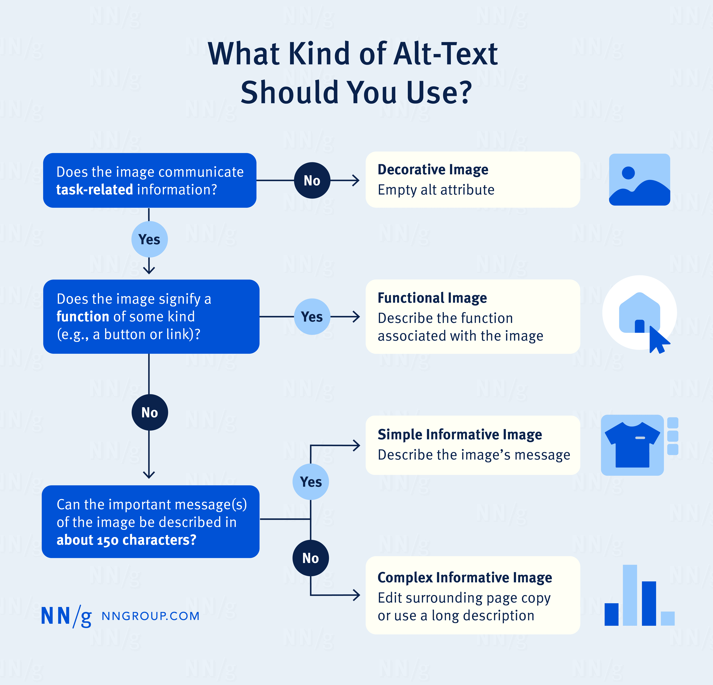
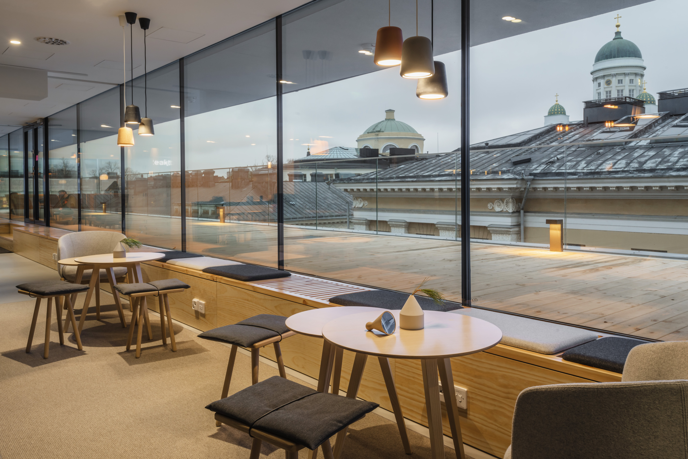

Below is sample website content. Some <img> tags on this site are missing alt attributes. Your task is to add them. Consider what visual elements need to be conveyed programmatically, such as for screen readers. Think about the purpose of the alt text – is it informative or functional? If an image is purely decorative, should it be left out?
Tip: The alt attribute is placed inside the <img> tag, before the closing />.
Assignment
Find the row where the content of the exercise starts on Codepen HTML.
Add missing alt attributes to images to the HTML section.
Right-click anywhere on the web page and select Inspect. Click the Inspect icon in the top-left corner of DevTools (Chrome) and hover over the images you fixed.
How did your changes improve the accessibility of this site?
Example
<img src="somephoto.png" alt="A sunset over the mountains" />
Testing for feedback
Informative images convey a concept, idea, or emotion. These include photos of real-world objects, simple drawings, and images containing text. If an image is informative, its alt text should clearly describe its purpose and meaning.
Study Material
Alt text describes visual content for people using assistive technologies like screen readers. While it's often read aloud, how it's presented depends on the technology and user settings.
When writing alt text, consider whether the image is decorative, informative, or functional.
Decorative images
Decorative images do not add essential context or meaning. They are primarily for aesthetics rather than conveying information. However, interpretations of “decorative” can vary—some users prefer descriptions for all images, while others may choose to skip them. Since users cannot infer details that aren’t provided, it’s generally best to include an alt text when uncertain.
Informative images
Informative images convey a concept, idea, or emotion. These include photos of real-world objects, simple drawings, and images containing text. If an image is informative, its alt text should clearly describe its purpose and meaning.
Functional images
Functional images serve an interactive role, such as linking to another page or triggering an action. Examples include logos that navigate to the homepage, a magnifying glass icon for search, or social media icons directing users to external platforms. Unlike informative images, the alt text for functional images should describe the action they perform rather than their appearance.

An infographic that might prove helpful when choosing what kind of alt text, if any, to include in the image (Courtesy of nngroup.com).
Exercise
Below is the mockup website you'll be working on.
Helsinki
Shared spaces
Love working around others and enjoying casual office chats? Our shared spaces are perfect for those who thrive
in a social environment. We're known for our vibrant community, so if you’re looking to meet new people, this
could be the perfect fit for you!
Katajanokankatu 1
Uudenmaankatu 3

Urho Kekkosen katu 3
Vilhovuorenkatu 13
Individual spaces
If you need a quiet, focused space away from home, our private rooms offer just that: your own dedicated
workspace with access to community kitchens and shared areas. Enjoy the best of both worlds: privacy when you
need it and community when you want it.